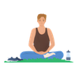

Bienestar digital y desconexión
Construye un sistema sostenible de descanso y desconexión, aprende a reconocer las señales del burnout y diseña tu bienestar mínimo viable.
- Las tres dimensiones del burnout y sus señales tempranas
- Higiene digital: diseñar el entorno con intención
- Trabajo remoto y presencia sin oficina
- Fatiga digital y recuperación real
- Mindfulness para dormir mejor
- Ritual de cierre del día (3 min)
- Desconexión consciente al cerrar el laptop
- Detox de notificaciones — reto de 48 horas
- Body scan nocturno (5 min)
Burnout: el sistema operativo colgado
3 min · Video + test
El burnout no aparece de repente
Se construye despacio, durante meses, mientras ignoras las señales. La OMS lo define en tres dimensiones: agotamiento, cinismo e ineficacia.
Agotamiento
La sensación de que no tienes energía para nada, ni siquiera para lo que antes te gustaba. No es cansancio normal — no desaparece con un fin de semana de descanso.
Cinismo
Distancia emocional del trabajo. La sensación de que da igual lo que hagas. La pérdida de significado en lo que haces.
Ineficacia
La percepción de que no eres capaz, aunque objetivamente sigas funcionando. El síndrome del impostor en su versión más pesada.
Higiene digital con intención
2 min · Video + auditoría
No te preguntaron si querías
Nadie te preguntó si querías que tu teléfono te mandara notificaciones de 47 aplicaciones. Simplemente las instalaste, diste permisos, y el teléfono empezó a interrumpirte.
No es no usar tecnología. Es decidir cómo la usas en lugar de dejar que ella decida por ti.
Trabajo remoto: presencia sin oficina
2 min · Video + guía
La paradoja del trabajo remoto
Estás más conectado que nunca, y más solo que nunca. Las herramientas de comunicación están siempre abiertas. Pero la conexión real, la que ocurre en los pasillos y en las pausas del café, ha desaparecido.
Señales sociales reales
El cerebro necesita señales sociales reales para regular el estado de ánimo y mantener el sentido de pertenencia. El texto en Slack no las da. La voz, algo más. El vídeo, bastante más.
Al inicio del standup, una pregunta real: ¿cómo está cada uno esta semana? No de trabajo. De verdad.
En tu próximo 1:1, haz una pregunta que no sea de trabajo. Estar realmente presente en esa conversación vale más que 10 mensajes.
No por obligación. Como elección consciente de estar presente.
Fatiga digital y recuperación real
3 min · Audio guiado
Descansar frente a otra pantalla no recupera
Tu cerebro no sabe que estás descansando porque sigue procesando estímulos visuales y cognitivos. La recuperación real requiere ausencia de estímulos de alta exigencia.
Movimiento ligero
Caminar, estirar. Sin pantalla, sin auriculares, sin podcast.
Naturaleza
Mirar algo que esté a más de 3 metros. Verde, cielo, lo que sea. Tus músculos oculares llevan horas en modo foco cercano.
Conversación sin agenda
Hablar con alguien sin un objetivo concreto. Solo estar.
Aleja la vista de la pantalla. Mira un punto lejano. Deja que tus ojos descansen.
Mindfulness para dormir
5 min · Audio guiado nocturno
Tumbado o en el sofá. Sin pantalla. Este es el único audio del curso que funciona mejor con los ojos cerrados.
Por qué el cerebro sigue ejecutando
Ese loop donde repasas lo que hiciste, lo que no hiciste, lo que tienes que hacer mañana, no es productivo. Es el sistema nervioso que no ha recibido la señal de que puede parar.

Parking nocturno
Trae a la mente las tareas pendientes. Una por una, imagina que las guardas en un archivo, las etiquetas como 'mañana' y cierras el archivo.
Lo que hiciste hoy fue suficiente. No perfecto. Suficiente.
— Mindful.TechTu sistema de bienestar sostenible
3 min · Ejercicio + plan
Has llegado al final del curso
Cuatro semanas. Cuatro módulos. Un programa completo sobre atención, regulación, flow y desconexión.
Lo que no se espera de ti
No se espera que practiques todo lo que aprendiste cada día. Eso no es realista. Tampoco es el objetivo.
Lo que sí es el objetivo
Tres hábitos no negociables que hagas aunque el día sea caótico, aunque tengas un deadline, aunque no tengas ganas.
En un entorno donde el activo principal es tu mente, su cuidado no es un lujo. Es infraestructura.
— Mindful.TechBuen trabajo.
Lo que aprendiste aquí no se olvida en una semana. Se consolida con la práctica. Vuelve cuando lo necesites.
Módulo 4 completado
Has recorrido todas las sesiones de Bienestar digital y desconexión. Puedes volver a cualquier sesión cuando lo necesites.